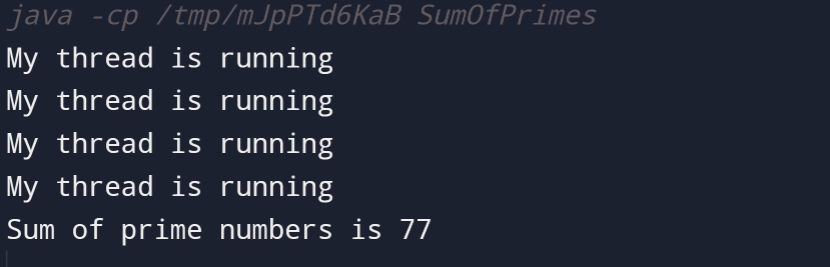

Write a Java program that calculates the sum of all prime numbers up to a given limit using multiple threads.
Code:-
// Calculate sum of prime numbers up to a given limit using multiple threads
class MyThread extends Thread {
private int start, end;
private int sum = 0;
MyThread(int start, int end) {
this.start = start;
this.end = end;
}
public void run() {
System.out.println("My thread is running");
for (int i = start; i <= end; i++) {
if (isPrime(i))
sum += i;
}
}
boolean isPrime(int n) {
if (n == 0 || n == 1)
return false;
for (int i = 2; i <= Math.sqrt(n); ++i) {
if (n % i == 0)
return false;
}
return true;
}
public int getSum() {
return sum;
}
}
class SumOfPrimes {
MyThread[] myThreads;
private int sum = 0;
private int limit = 20;
private static int threadCount = 4;
// Constructor to initialize the array of threads
public SumOfPrimes(int n) throws InterruptedException {
this.myThreads = new MyThread[n];
for (int i = 0; i < n; i++) {
int start = ((limit * i) / n);
int end = (i == n-1) ? limit : ((limit * (i+1))/n) - 1;
myThreads[i] = new MyThread(start, end);
}
}
// Function to start all threads
public void startAll() throws InterruptedException {
for (int i = 0; i < myThreads.length; i++) {
myThreads[i].start();
myThreads[i].join();
}
}
public void getSum() {
for (int i = 0; i < myThreads.length; i++) {
this.sum += myThreads[i].getSum();
}
}
public static void main(String[] args) {
try {
SumOfPrimes mt = new SumOfPrimes(threadCount);
mt.startAll();
mt.getSum();
System.out.println("Sum of prime numbers is " + mt.sum);
} catch (InterruptedException e) {
System.err.print("Error: " + e);
}
}
}
Output:-
